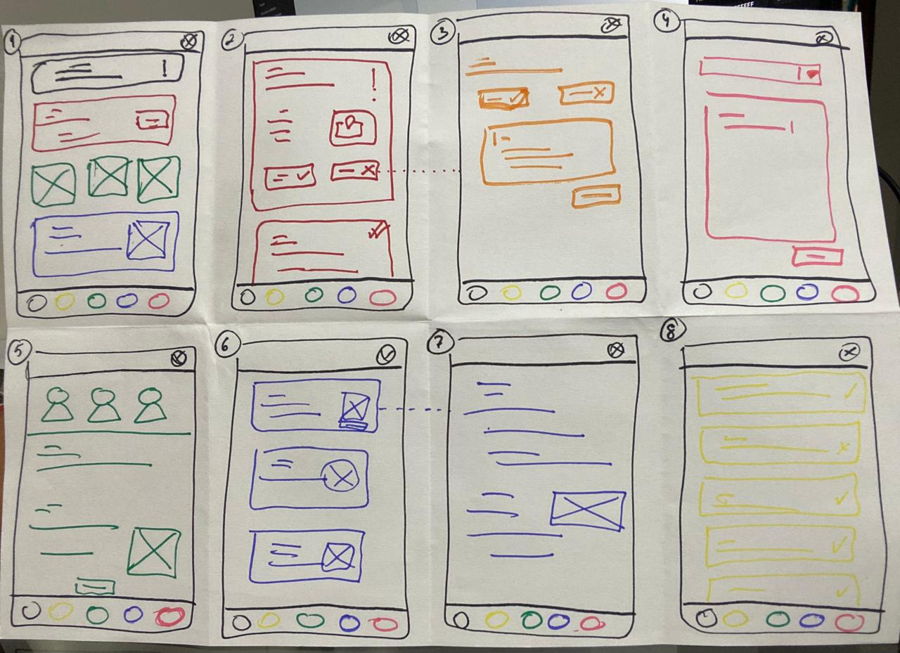
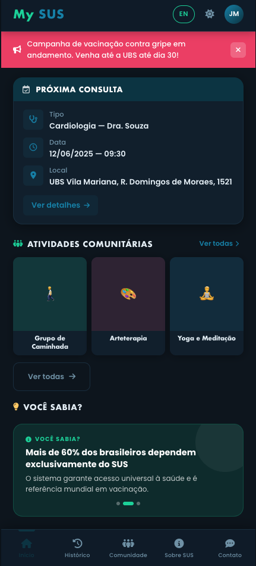
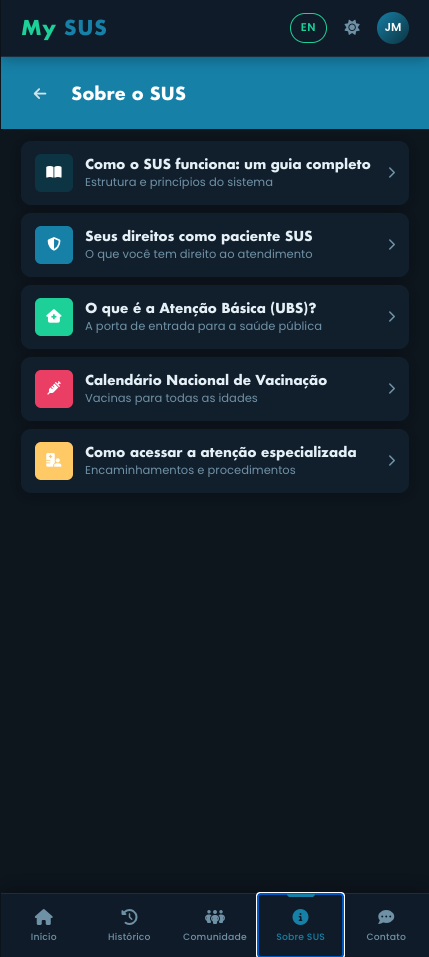
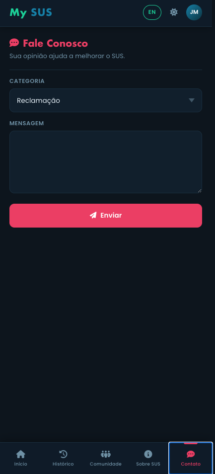

Project Week 1 - Transition into UX for Healthcare
Lenise Santana
Initial research was conducted through secondary analysis of two official data sources: the Brazilian National Ombudsman Report (OuvSUS 2024) and the São Paulo primary care management system (SIGA-SP 2024). Initial assumptions focused on access barriers and lack of information. After analysis, key findings revealed that high solicitation volume does not translate into high attendance, and geographic inequality exists even within the same city. The research shifted focus from "access to booking" to "patient retention, reminders, and communication."
🎯 All personas share one pain point: paper appointment management and lack of digital communication from UBS.
The patient receives an appointment via paper card at the UBS. The UBS relies on the patient's memory and willingness to attend — with no reminders or confirmations.
Initial sketches focused on simplifying the flow: homepage with alert banner, next appointment block, community activities grid, and SUS curiosities section. Removed reschedule option — only confirm or cancel.

After building the first prototype, we identified what was possible and what needed adjustments. The main changes were:
🔗 First prototype (v0):
https://v0.app/chat/my-ubs-app-ssMNLno1SPY?ref=QR35UQ
After concept changes in v0, Claude was used to build a new prototype with the described alterations. Added to GitHub, released, and deployed on Netlify.
🔗 Live prototype (Netlify):
https://mysus.netlify.app/



Implementing healthcare applications involves specific challenges: sensitive data, regulatory compliance (LGPD), and extreme accessibility requirements. Despite Brazil's large online presence, significant social contrasts exist. Simple applications are essential — with ease of use, speed on low-performance devices, and simple, objective language.
Starting this course with this challenge was incredibly motivating. The shift from "building a feature-rich app" to "solving a real communication gap in public health" changed my entire design approach.
This project is part of my UX Design coursework. I'm passionate about designing accessible digital health solutions for public systems in Brazil.
📧 Email: lenise.santana@gmail.com
💼 LinkedIn: https://www.linkedin.com/in/lenise-santana-72b824311/
🌐 GitHub: https://github.com/Lemoraess